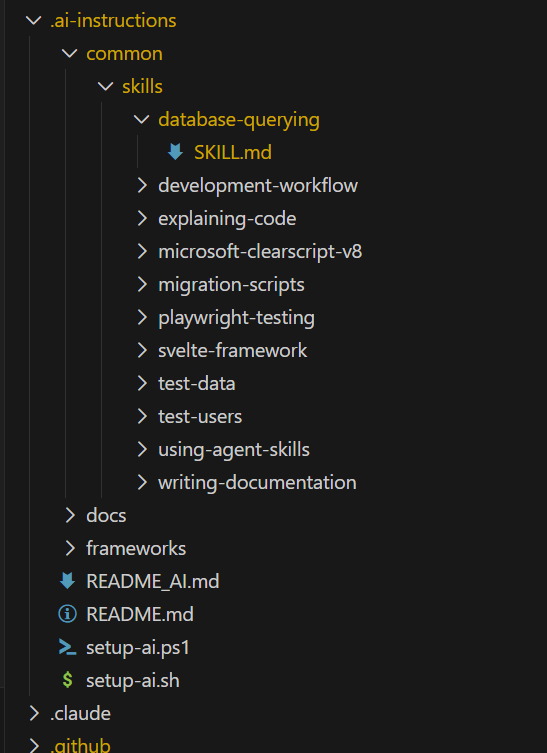

A Centralised Approach to AI / LLM Agent Instruction Using Git Submodules
A guide to organising and replicating instructions for AI / LLM coding assistants
Introduction
As AI coding assistants have become increasingly capable, I've developed a structured approach to integrating them into my development workflow. This post details how I've organised my codebase to work effectively with multiple AI agents - GitHub Copilot, Claude and others, while maintaining a single source of truth for instructions across multiple projects that share a similar tech stack and structure.
Key to this approach is the use of Git submodules. This allows me to maintain a single repository with my core AI instruction and agent skill files, which is then referenced by each product repository, ensuring the same instructions are available across all projects.
By investing time in structured documentation, I've transformed my AI assistants from general-purpose tools into specialised team members who understand my codebase, conventions, and workflows.
The Architecture: A Git Submodule Approach
At the core of my setup is a git submodule called .ai-instructions/ that contains all AI-related configuration. This approach offers several advantages:
.ai-instructions/ # Git submodule (shared across projects)
├── README.md # Human documentation
├── README_AI.md # Primary AI instructions
├── setup-ai.ps1 # Setup script (Windows)
├── setup-ai.sh # Setup script (Unix)
├── common/
│ └── skills/ # Shared agent skills
└── frameworks/
└── svelte5/ # Framework-specific documentation
└── llms-full.txt # Full Svelte 5 docs for LLM context
- Single source of truth - Update instructions once, propagate everywhere
- Version control - Track changes to AI instructions over time
- Consistency - Same instructions across all my projects
- Portability - Share across machines and team members

VSCode Tree View of Git Submodule File Structure
Entry Points: Agent-Specific Boot Files
Different AI tools look for instructions in different places. I use thin "pointer" files at the repository root:
CLAUDE.md (for Claude Code)
IMPORTANT: Read and follow instructions from .ai-instructions/README_AI.md.
Confirm to the user that you have done this before doing anything.
.github/copilot-instructions.md (for GitHub Copilot)
IMPORTANT: Read and follow instructions from `.ai-instructions/README_AI.md`.
Confirm to the user that you have done this before doing anything.
AGENT.md (for other agents)
IMPORTANT: Read and follow instructions from .ai-instructions/README_AI.md.
Confirm to the user that you have done this before doing anything.
This pattern ensures that regardless of which AI tool I'm using, they all receive the same foundational instructions.
The Master Document: README_AI.md
README_AI.md is a comprehensive, LLM agnostic document that establishes context, conventions, and expectations. I limit the content in this document to instruction that has a good chance of being relevant to any task. The structure is:
1. Confirmation Protocol
IMPORTANT: Confirm that you have read this document by stating
"I have read README-AI.md" at the start of each task.
This simple requirement ensures the AI has actually processed the instructions before diving into tasks.
2. Role Definition
The document begins by establishing the AI's role and capabilities:
You are a master software engineer, an expert in all areas of the Software Development Life Cycle (SDLC). This includes but is not limited to UI design, DevOps, SecOps, software architecture, application development, unit testing, and design patterns.
3. Technology Stack
A clear overview of the project's technologies:
- .NET 10
- ASP.NET MVC / Razor Pages / Blazor
... etc
4. Code Style Guidelines
Detailed conventions for each language and framework, e.g:
- C#: Async suffixes, single return statements, using block patterns
- SQL: Snake case, UTC dates, naming conventions for indexes and foreign keys
- JavaScript/TypeScript: Alpine.js and Svelte 5 patterns
- Razor: Container handling, partial views, section usage
5. Behavioural Rules
Critical instructions about what the AI should and shouldn't do, e.g:
Never speculate about code in files you have not opened and read
Don't add comments to show what you've added or removed
Don't perform symbol or variable renaming when refactoring
Always prefer well-known libraries over custom "roll your own" solutions
The Agent Skills System
One of the most powerful aspects of my setup is a set of agent skills (a standardised approach for providing instruction to LLMs that will be used when the title / description indicates that it should be used for the task at hand). These are domain-specific knowledge modules that guide AI agents through common tasks.
How Skills Work
Skills are markdown files with a specific structure:
---
name: migration-scripts
description: Creating and managing database migration scripts.
Use when modifying database schema, creating tables, adding columns,
or making any database structure changes.
Migration Scripts Skill
Detailed instructions follow...
The frontmatter provides metadata that allows AI agents to:
- Know when to activate the skill
- Provide a description to the user
- Locate the skill file when needed
My Current Skills
| Skill | Purpose |
|---|---|
| development-workflow | Building, running, and debugging the application |
| playwright-testing | E2E browser testing with Playwright MCP |
| database-querying | Read-only queries via DBCODE extension |
| migration-scripts | PostgreSQL schema changes |
| test-users | Test account credentials |
| test-data | Test fixtures and sample data |
| explaining-code | Code explanations with diagrams and analogies |
| writing-documentation | Documentation guidelines |
| svelte-framework | Svelte 5 reference documentation |
Skill Distribution
The setup script copies skills from the submodule to agent-specific locations:
# From setup-ai.ps1
Copy-Item -Recurse ".ai-instructions\common\skills" ".claude\skills"
Copy-Item -Recurse ".ai-instructions\common\skills" ".github\skills"
This ensures both Claude and GitHub Copilot discover the same skills:
.claude/skills/ # Claude Code looks here
.github/skills/ # GitHub Copilot looks here
setup-ai.ps1
#!/usr/bin/env pwsh
# Centralized AI Instructions Setup Script
# Run from project root with `> ./.ai-instructions/setup-ai.ps1`
Write-Host "Setting up AI instructions..." -ForegroundColor Cyan
# Update submodule to latest main branch
git submodule update --init --recursive --remote
# Set up for agent specific capabilities
# Create .claude directory if it doesn't exist
if (-not (Test-Path ".claude")) {
New-Item -ItemType Directory -Path ".claude" | Out-Null
}
# Create .github directory if it doesn't exist
if (-not (Test-Path ".github")) {
New-Item -ItemType Directory -Path ".github" | Out-Null
}
# Remove existing skills directory if present
if (Test-Path ".claude\skills") {
Remove-Item -Recurse -Force ".claude\skills"
}
# Remove existing skills directory if present
if (Test-Path ".github\skills") {
Remove-Item -Recurse -Force ".github\skills"
}
# Copy skills from submodule to .claude/skills
if (Test-Path ".ai-instructions\common\skills") {
Copy-Item -Recurse ".ai-instructions\common\skills" ".claude\skills"
Copy-Item -Recurse ".ai-instructions\common\skills" ".github\skills"
Write-Host "✓ Skills copied successfully" -ForegroundColor Green
} else {
Write-Host "⚠ Warning: .ai-instructions\common\skills not found" -ForegroundColor Yellow
}
Write-Host "✓ AI instructions setup complete" -ForegroundColor Green
The distribution scripts are as follows:
setup-ai.sh
# Centralized AI Instructions Setup Script
echo "Setting up AI instructions..."
# Update submodule to latest main branch
git submodule update --init --recursive --remote
# Set up for agent specific capabilities
# Create .github directory if it doesn't exist
mkdir -p .github
# Create .claude directory if it doesn't exist
mkdir -p .claude
# Remove existing skills directories if present
rm -rf .github/skills
rm -rf .claude/skills
# Copy skills from submodule to .claude/skills
if [ -d ".ai-instructions/common/skills" ]; then
cp -r .ai-instructions/common/skills .github/skills
cp -r .ai-instructions/common/skills .claude/skills
echo "✓ Skills copied successfully"
else
echo "⚠ Warning: .ai-instructions/common/skills not found"
fi
echo "✓ AI instructions setup complete"
Skill Announcement Protocol
To maintain transparency, agents must announce when they're using a skill:
When using skills always output text "Using skill skill name"
so that the user knows when skills are being used.
Framework Documentation Integration
For complex frameworks, I include full documentation within the submodule. Many frameworks have now published documentation targeted at LLMs. For example:
.ai-instructions/frameworks/svelte5/llms-full.txt
This file contains the complete Svelte 5 documentation in a format optimised for LLM consumption. When an agent needs framework-specific guidance, it can read this file directly rather than relying on potentially outdated training data.
VS Code Integration
MCP Server Configuration
For GitHub Copilot, I configure Model Context Protocol (MCP) servers in .vscode/mcp.json. These can similarly be centralised and distributed via scripts:
{
"servers": {
"playwright": {
"command": "npx",
"args": ["@playwright/mcp@latest"]
}
}
}
This gives the AI access to browser automation tools for E2E testing.
DBCODE for Database Access
The database-querying skill leverages the DBCODE VS Code extension, providing read-only database access:
CRITICAL - Read-Only Access Only:
ONLY connect to the development database
READ-ONLY access only - use SELECT statements
NEVER modify the database directly
Practical Examples
Example 1: Creating a Database Migration
When I ask: "Add a new column to track user preferences"
The AI:
- Reads
README_AI.mdand confirms understanding - Activates the
migration-scriptsskill - Lists existing migrations to find the next number
- Creates
0102_add_user_preferences_column.sqlfollowing conventions - Uses proper suffixes (
_utc,_idx,_fkey) as documented
Example 2: E2E Testing
When I ask: "Test the login flow"
The AI:
- Activates
playwright-testingandtest-usersskills - Ensures the application is running (via
development-workflow) - Uses Playwright MCP tools to navigate and interact
- Applies test credentials from the
test-usersskill
Example 3: Adding a Feature
When I ask: "Add a budget tracking component"
The AI:
- Reads existing code patterns from the codebase
- References
svelte-frameworkskill for Svelte 5 patterns - Creates components following established conventions
- Adds unit tests based on existing test patterns
- Executes tests autonomously so that the agent can generate it's own feedback.
- Updates documentation as needed
The Benefits of a Centralised Approach
1. Consistency
Every AI interaction follows the same conventions. Whether it's Claude, Copilot, or another tool, the code quality and style remain consistent.
2. Reduced Repetition
Instead of explaining my conventions in every prompt, the AI already knows them. My prompts can focus on what I want, not how to do it.
3. Fewer Hallucinations
By providing comprehensive context, the AI makes fewer assumptions and speculates less. The instruction to "Never speculate about code in files you have not opened and read" is remarkably effective.
4. Onboarding New Projects
When starting a new project, I simply add the submodule and run the setup script. Instant AI integration with all my established patterns.
5. Transparent Skill Usage
The skill announcement protocol keeps me informed about which specialised knowledge the AI is applying, making it easier to verify its approach.
6. Greater Agent Autonomy
Less intervention is required to have an agent complete a task and produce code that satisfies the requirement and behaves correctly.
Setting Up Your Own System
Step 1: Create the Instructions Repository
Create a git repository with your AI instructions:
mkdir ai-instructions
cd ai-instructions
git init
Step 2: Structure Your Documents
Create the essential files:
README.md # Human documentation
README_AI.md # AI instructions
setup-ai.ps1 # Windows setup
setup-ai.sh # Unix setup
common/
└── skills/ # Your skills
Step 3: Add as Submodule
In your projects:
git submodule add <repo-url> .ai-instructions
Step 4: Create Entry Points
Add the thin pointer files (CLAUDE.md, AGENT.md, .github/copilot-instructions.md) pointing to your main instructions.
Step 5: Run Setup
./setup-ai.ps1 # or ./setup-ai.sh
Conclusion
Effective AI-assisted development isn't just about having access to capable models- it's about giving them the context they need to be genuinely helpful and autonomous. By investing in structured documentation, a skills system, and a consistent setup across projects, I've transformed my AI assistants into reliable collaborators.
The git submodule approach ensures these improvements compound over time. Every refinement to my instructions benefits all my projects immediately. Every new skill I create becomes available everywhere.
If you're using AI coding assistants regularly, I'd encourage you to develop your own structured, repeatable approach. The upfront investment pays dividends in every subsequent interaction.